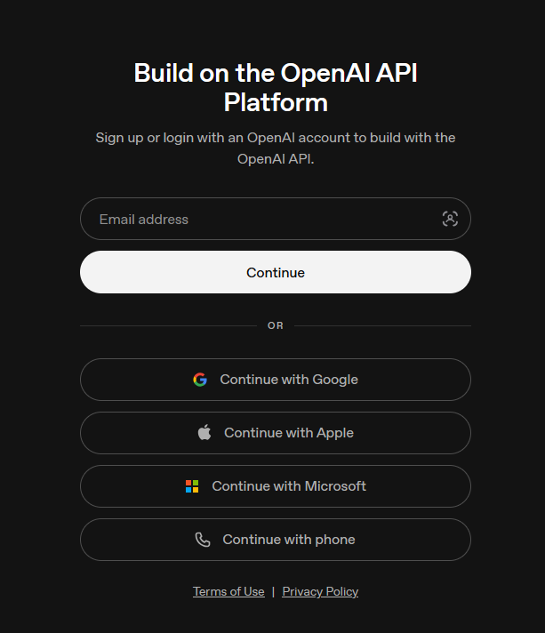
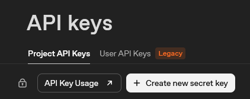
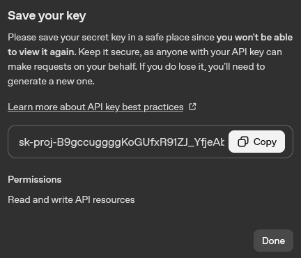
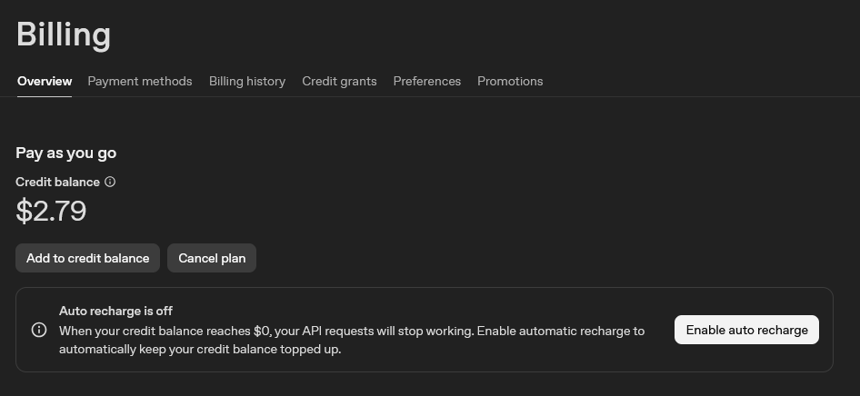

Fournisseurs de traduction
DeepL
Utilisé pour : traduction automatique avec choix de formalité.
- Sur https://www.deepl.com/pro-api, choisissez Sign up for free dans Developer.
DeepL vérifie votre e-mail et votre carte bancaire, sans rien prélever pour l’offre Developer, qui comprend
1 000 000 de caractères offerts une fois.

- Ouvrez Account ▸ API Keys, https://www.deepl.com/your-account/keys, puis copiez Authentication Key.

- Collez-la dans Settings ▸ DeepL. SubVox Pro reconnaît seul s’il s’agit d’une clé Free ou Pro.
Aide.
Google Cloud Translation
Utilisé pour : traduction automatique.
- Créez ou choisissez un projet sur https://console.cloud.google.com. Les nouveaux comptes reçoivent 300 $ d’essai valables 90 jours, et Translation offre 500 000 caractères par mois. Un compte de facturation est malgré tout obligatoire.
- Dans APIs & Services ▸ Library, activez Cloud Translation API avec Enable.
- Dans APIs & Services ▸ Credentials, choisissez Create credentials ▸ API key. Copiez la clé et, au besoin, limitez-la à Cloud Translation API.
- Collez-la dans Settings ▸ Google Translate.
Fixez un quota ou une alerte de budget avant la fin du crédit d’essai.
OpenAI
Utilisé pour : transcription, traduction par modèle de langage, report des styles de mots et doublage. Une seule clé sert à tout.
- Créez un compte ou connectez-vous sur https://platform.openai.com.

- Ouvrez API Keys dans le projet.

- Cliquez sur Create new secret key.

- Donnez-lui un nom si vous le souhaitez, vérifiez le projet et les permissions, puis cliquez sur Create secret key.

- Copiez tout de suite le secret : OpenAI ne l’affiche qu’une fois.

- Ajoutez des crédits depuis https://platform.openai.com/settings/organization/billing/overview.
Ou passez par le menu du compte, Organization settings ou Profile settings, puis Billing.


- Dans Billing, cliquez sur Add to credit balance : l’API puise dans ce solde.

- Choisissez le montant et le moyen de paiement, puis Continue. Le minimum est en général de 5 $.

- Collez la clé dans Settings ▸ OpenAI et choisissez le modèle dans le panneau concerné. En Text-to-Speech, gpt-realtime-2.1-mini propose 10 voix et suit les indications de jeu via Realtime. Les anciens choix de modèles migrent automatiquement. Les voix fable, nova et onyx exigent un nouveau choix. Realtime reçoit une consigne de lecture exacte du texte : vérifiez les dialogues générés. L’audio généré coûte environ 0,024 $/minute, plus les tokens texte (0,60 \(en entrée / 2,40\) en sortie par million). Le batch estime l’audio et le texte avec 14 caractères/seconde et 4 caractères/token ; les consignes et le rythme peuvent modifier la facture. En Speech-to-Text, choisissez OpenAI, puis le modèle de transcription.
Timings de transcription :
gpt-transcribeest le modèle actuel pour les enregistrements, sans timing par mot. SubVox Pro répartit les mots sur le clip par estimation. Utilisez l’alignement local ou un fournisseur avec horodatage des mots lorsque le timing compte.- Les choix enregistrés
whisper-1,gpt-4o-transcribeetgpt-4o-mini-transcribemigrent versgpt-transcribe; le timing par mot fourni auparavant parwhisper-1disparaît.- AssemblyAI, Gladia, Deepgram, Speechmatics, ElevenLabs, Rev AI, Whisper local et Parakeet renvoient directement des mots ponctués et horodatés : préférez-les quand le timing compte.
La transcription OpenAI accepte des fichiers de 25 Mo au maximum. Dépréciations OpenAI.
Pour le doublage, les règles d’OpenAI imposent d’indiquer aux joueurs que les voix sont générées par IA, par exemple dans les crédits ou sur la page du jeu. Tarifs API.
Anthropic, Claude
Utilisé pour : traduction par modèle de langage et report des styles de mots.
- Créez un compte ou connectez-vous sur https://console.anthropic.com.

- Achetez des crédits avant toute requête : l’API est prépayée et refuse les appels sans solde.
Le premier montant proposé est souvent de 5 $.

- Ouvrez API keys dans la console Claude.

- Cliquez sur Create key.

- Choisissez l’espace de travail, donnez éventuellement un nom, puis cliquez sur Add.

- Copiez la clé tout de suite : elle ne sera plus affichée en entier.

- Collez-la dans Settings ▸ Claude.
Google, Gemini
Utilisé pour : traduction par modèle de langage et doublage. C’est l’option gratuite la plus simple, sans compte de facturation, et une seule clé sert aux deux.
- Connectez-vous avec Google sur https://aistudio.google.com.

- Ouvrez API keys, https://aistudio.google.com/app/apikey, puis Create an API key.

- Nommez la clé, choisissez ou créez un projet, puis créez-la.

- Copiez-la depuis son panneau de détails.

- Depuis la liste, vous pourrez ensuite recopier la clé, suivre la consommation ou configurer la facturation.

- Collez-la dans Settings ▸ Gemini. Pour doubler, choisissez Gemini dans Text-to-Speech : 30 voix multilingues (Kore, Puck, Leda…) qui suivent les indications de jeu. Modèles : gemini-3.1-flash-tts-preview (par défaut, le plus naturel), gemini-2.5-flash-preview-tts (moitié moins cher en usage payant) et gemini-2.5-pro-preview-tts (sans offre gratuite, facturation requise).
L’offre gratuite ne demande aucune facturation, mais limite le débit (voir Rate limit dans AI Studio). Les limites du doublage sont les plus strictes : quelques requêtes par minute et par jour. SubVox Pro patiente et réessaie quand Google indique un délai, et prévient clairement quand le quota du jour est épuisé. Activer la facturation relève ces limites, sans rien changer d’autre dans SubVox Pro. Les requêtes gratuites peuvent servir à améliorer les produits Google.
DeepSeek
Utilisé pour : traduction à bas coût, avec une API compatible OpenAI.
- Créez un compte ou connectez-vous sur https://platform.deepseek.com.
- Ajoutez du crédit avec Top up avant de commencer : sans solde, les requêtes échouent.
- Ouvrez API keys, https://platform.deepseek.com/api_keys, puis Create new API key. Nommez-la
(
SubVoxPro, par exemple) et copiez-la tout de suite : elle ne s’affiche en entier qu’une fois. - Collez-la dans Settings ▸ DeepSeek, puis choisissez le modèle dans le panneau de traduction.